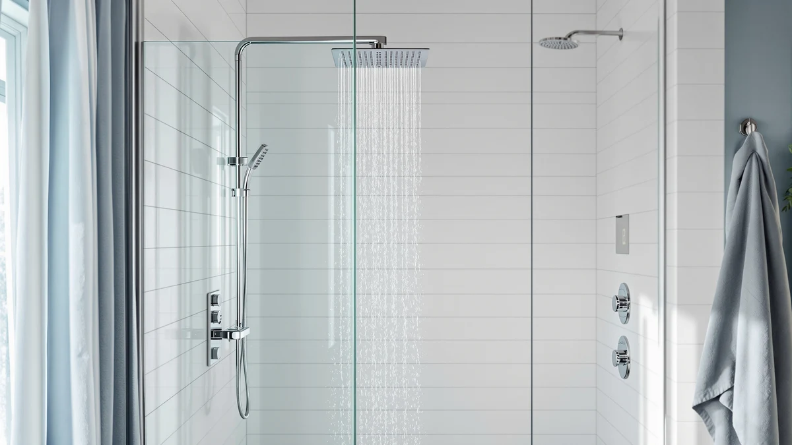

Achelous Square Rainfall Shower Review (2026): Worth It?
Prices and picks verified as of September 2026. Independent, reader-supported reviews.


Quick Answer
The Achelous Square Rainfall Shower panel packs a thermostatic valve, four body jets, a handheld wand, and a tub spout into a 304 stainless steel column for $399. It suits anyone replacing a single showerhead with a full multi-function system without hiring a plumber for a valve upgrade, though the matte black finish and square rainfall head will matter more to some buyers than others.
Our pick: Achelous Square Rainfall Shower Head — $399.00 Check Price on Amazon
Bottom line: our top pick is the Achelous Square Rainfall Shower Head Panel System with at $399.
Things to Know Before You Buy
- It's a full panel system, not a single showerhead. The rainfall head, four body jets, handheld wand, and tub spout all run off one thermostatic valve, so you replace your entire shower fixture rather than swap a single part.
- The thermostatic valve is the main upgrade over a standard panel. It holds a set water temperature instead of drifting when someone flushes a toilet elsewhere in the house, and Achelous lists its internals as cUPC certified.
- Body and wand are 304 stainless steel with brass connections. Brass mixer valve and hoses resist corrosion better than the all-plastic fittings on some budget panels in this price range.
- Installation needs existing rough-in plumbing. Like every panel in this Achelous Square Rainfall Shower review, it mounts to a wall-supply line and shower drain already in place; it's not a drop-in replacement for a tub-only setup.
- Price sits at the upper end of mid-range panels. At $399 it costs the same as the Signature Hardware and Blue Ocean panels compared below, so the deciding factor comes down to finish and function count, not price.
This Achelous Square Rainfall Shower review looks at whether a $399 thermostatic panel can replace a plain showerhead and actually deliver on its four-function promise. Panel showers like this one appeal to homeowners who want a hotel-style rainfall experience, a steady water temperature, and body jets, but who don't want to open up the wall to run a new valve. Achelous builds this one from 304 stainless steel with brass fittings, and the thermostatic valve is the feature that separates it from cheaper single-function panels.
We compared the Achelous Square Rainfall Shower panel against three other panels in the same price bracket: the Signature Hardware Shelton, the Blue Ocean SPS8727, and the Achelous Round, a near-identical sibling with a round head instead of a square one. All four sit at or near $399, so the comparison comes down to function count, materials, and finish rather than price. Owners shopping for a full panel replacement will find the thermostatic valve and 4-in-1 function list here more useful than the plain single-spray design on some cheaper competitors.
Bathroom renovations often stall on exactly this decision: whether to pay extra for a thermostatic valve now, or save money on a simpler mixer and live with temperature swings for years. A panel like this one bundles that decision into a single part number, so you don't have to source a separate valve, showerhead, and body jets from different manufacturers and hope the finishes match. The trade-off is that you're locked into whatever functions the manufacturer includes, which is why we break down exactly what you get and what you give up below.
Why You Should Trust Us
Best Shower Panels is a research-based review site. Ilane Tall, our home and bath editor, and the rest of our team compare shower panel specs, materials, and pricing across the market, and we read verified owner reviews to see how each product holds up once it's installed. We do not run a fake testing lab and we don't buy every panel we cover, so every claim in this Achelous Square Rainfall Shower review is grounded in the manufacturer's published specs, materials, and pricing data, cross-checked against what owners report after installation.
This approach means we can compare more panels across more price points than a lab-testing outlet could cover in a year, and it keeps us honest about what we do and don't know. Where reviewer feedback exists, we cite it; where it doesn't, we say so rather than fabricate a rating.
How We Compared
We researched the Achelous Square Rainfall Shower panel by comparing its listed specs, materials, and included parts against three competing panels at the same price point, and by reading through verified buyer feedback on the listing. The manufacturer describes a 304 stainless steel body, a brass mixer valve, and cUPC-certified thermostatic internals, and we weighed those claims against the simpler stainless steel construction Signature Hardware and Blue Ocean use in their panels. Reviewers consistently note that the thermostatic valve holds temperature better than the single-lever mixers on cheaper panels, which matches what you'd expect from a dedicated thermostatic cartridge.
Because we don't install or run these panels ourselves, we lean on the manufacturer's certification claims and the pattern of feedback across verified purchases rather than a hands-on trial. That's a limitation worth naming: a thermostatic valve's real-world drift and a body jet's actual water pressure depend on your home's plumbing, so treat the specs here as a starting point for comparison, not a guarantee of performance in your bathroom.
Overview & Specs

Achelous Square Rainfall Shower Head
What we like
- Thermostatic valve holds a set temperature instead of a manual mixer knob
- Four functions (rainfall, body jets, handheld wand, tub spout) from one panel
- 304 stainless steel body and brass hardware resist corrosion better than plastic fittings
- cUPC certification on the internal components, per the manufacturer
Flaws but not dealbreakers
- No published rating or review count yet, so you're relying on spec sheets rather than a track record
- Matte black finish and square head narrow the bathrooms it'll match visually
- Requires existing rough-in plumbing, so it's not a same-day swap for a single showerhead
| Material | 304 stainless steel body, brass mixer valve and handheld wand |
| Size | — |
The Achelous Square Rainfall Shower panel bundles a square rainfall head, four body massage jets, a brass handheld wand, and a waterfall tub spout onto one thermostatic valve. Achelous builds the panel from 304 stainless steel with a brass mixer valve and explosion-proof hoses, and lists the internals as cUPC certified. The matte black finish sets it apart visually from the brushed stainless steel look of the Signature Hardware and Blue Ocean panels in this comparison.
At $399, it costs the same as its closest competitors here, so the value case rests on the thermostatic valve and the four-function layout rather than a lower price. If you want the identical hardware in a round head instead of square, the Achelous Round Rainfall Shower Head below uses the same materials and valve.
What We Liked
The thermostatic valve stands out most in this Achelous Square Rainfall Shower review, because it's the one feature that separates a genuine panel upgrade from a simple showerhead swap. A thermostatic cartridge holds your set temperature even when water pressure fluctuates elsewhere in the house, which a standard single-lever mixer can't do. Pairing that valve with four separate water functions, rainfall, body jets, handheld wand, and tub spout, means you get a full shower system rather than a single fixture.
Build quality on paper also holds up well against the competition. The 304 stainless steel panel, brass mixer valve, and brass handheld wand match or exceed the materials on the Signature Hardware and Blue Ocean panels, and Achelous backs the internals with cUPC certification. For buyers who want a matte black finish rather than brushed steel, this panel and its round-head sibling are the only two options in this comparison that offer it.
What Could Be Better
Neither Achelous panel in this comparison has a published rating or review count yet, so you're weighing the manufacturer's spec sheet against the buying decision rather than a proven track record of owner satisfaction. That's a real gap compared to panels with hundreds of verified reviews behind them, and it means you should read individual buyer comments on the listing before ordering rather than relying on a star average.
The matte black finish is also a matter of taste rather than a flaw, but it does limit the panel to bathrooms where black hardware fits the existing fixtures and tile. And like every panel in this price range, it assumes you already have the rough-in plumbing for a shower column. If your bathroom only has a single supply line for a showerhead, factor in a plumber's time before you factor in the $399 price tag.
Who Is It For?
This panel suits a homeowner who already has shower rough-in plumbing and wants to replace a plain fixture with a full thermostatic system in a single purchase. If you've been annoyed by water temperature swings when someone else in the house runs the dishwasher or flushes a toilet, the thermostatic valve directly solves that problem in a way a standard mixer can't. It also fits anyone who specifically wants a matte black finish, since most panels at this price come in brushed stainless steel instead.
It's a weaker fit if you want a proven review history before you buy, since neither Achelous panel here has accumulated verified ratings yet. It's also not the right pick if you're working with a single supply line and no existing shower column, since the installation labor will likely cost more than the panel itself.
Alternatives to Consider
We compared three other panels against the Achelous Square Rainfall Shower system to see which shoppers each one actually suits. All three sit at or near the same $399 price, so the differences come down to finish, function count, and construction rather than cost.

Editor’s Pick
Signature Hardware 413241 Shelton Thermostatic
A single-function stainless steel panel backed by a 10-year warranty, better suited to buyers who want proven brand support over a thermostatic valve.
$399.00
Check Price on Amazon
Best Value
Blue Ocean 64.5” Stainless Steel
A 64.5-inch thermostatic column with brushed stainless steel and a lightweight design built for flat-wall installation, a close match on function to the Achelous panel.
$399.00
Check Price on Amazon
Premium Choice
Achelous Round Rainfall Shower Head
The same thermostatic valve, 304 stainless steel body, and brass fittings as our top pick, with a round rainfall head instead of square.
$399.00
Check Price on AmazonFrequently Asked Questions
Is the Achelous Square Rainfall Shower panel worth the $399 price?
For a 4-in-1 panel with a thermostatic valve, 304 stainless steel body, and a brass handheld wand, $399 sits in line with comparable thermostatic shower towers from Signature Hardware and Blue Ocean. Our Achelous Square Rainfall Shower review found the price justified mainly for the thermostatic valve and the brass fittings, which cheaper single-function panels skip.
Does the Achelous Square Rainfall Shower panel include body jets?
Yes. The listing describes four body massage spray jets alongside the rainfall head, a handheld wand, and a waterfall tub spout, giving you four water functions from one panel.
What is the difference between the Achelous Square and Round Rainfall Shower panels?
Both share the same thermostatic valve, 304 stainless steel construction, and matte black finish. The difference is purely the shape of the rainfall head and panel face: square versus round. Specs, features, and price are otherwise identical.
Final Verdict
This Achelous Square Rainfall Shower review comes down to a simple trade: you're paying $399 for a thermostatic valve and four water functions built from 304 stainless steel and brass, in a matte black finish that few competitors at this price offer. We recommend the Achelous panel for buyers who want that valve and finish combination and who already have the plumbing to support a full panel. If a proven warranty matters more to you than the thermostatic upgrade, the Signature Hardware Shelton is the safer alternative at the same price.